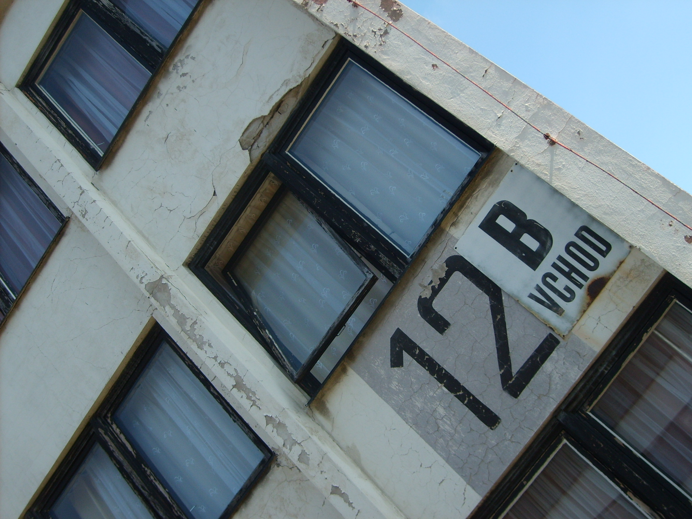
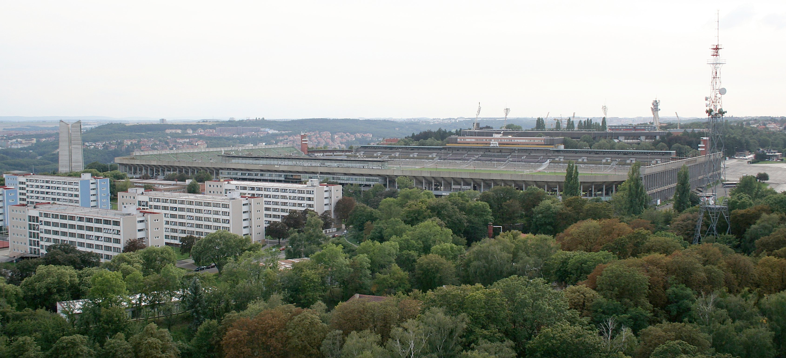

Mapa přiřazuje OSM obrysy ke konkrétním blokům, typům architektury a fotoreferencím. Klikni na budovu pro její zdroje. Oranžové body otevřou jedno z pěti skutečně evidovaných panoramatických stanovišť.
Přerušovaná čára: aktuální hranice hry. Stadion je samostatná kulisa vně hranic. Účel budovy a fotografie mají vlastní úroveň ověření; mapa není geodetické zaměření.
Zaškrtnuté snímky byly vizuálně prohlédnuté. Ostatní jsou katalog odkazů určený k dalšímu třídění. Smíšená galerie otevření obsahuje B3 i B4; fotografie z roku 2016 neurčují současný stav.
Otevřít původní galerii · 2024-06-20 · Jiří Ryszawy
Otevřít původní galerii · 2016-11-16 · ČVUT VIC
Fotografie ČVUT zde nejsou kopírovány ani použity jako herní textury. Pravidla Mediatéky pro použití mimo ČVUT vyžadují písemné schválení.


Postupuj mezi skutečnými kamerovými stanovišti, eviduj odkaz, pano ID, souřadnice, datum a původní heading/pitch/FOV. Každou stěnu ověř z více směrů a zapisuj skutečné sousední kroky. Dosud je doloženo pět stanovišť; jejich vzájemné navigační hrany zatím nejsou ověřené. Panorama není hotový 3D model.
Strukturovaná stanoviště a chybějící pokrytí · Celý index snímků · Katalog architektury pro renderer